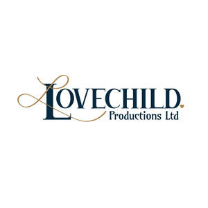

Trade Mark Journal No.2026/006 6 February 2026
UK00004329520 25 January 2026 (41)

- Class 41
- Theatre productions; Theatre entertainment; Theatre performances; Theatre production; Theater productions; Organising of theatre productions; Theater performances; Movie theatre presentations; Theater production; Entertainment in the nature of theater productions; Directing of theater productions; Entertainment in the nature of dinner theater productions; Theatre production services; Artistic management of theatre shows; Live musical theater performances; Entertainment by means of theatre productions; Direction of theatre shows; Theater production services; Providing performing arts theater facilities; Production of television and cinema films; Production of cinema films; Theatrical performances; Production of theatrical performances; Entertainment services by stage production and cabaret; Entertainment services in the form of cinema performances; Organisation of musical entertainment; Organisation, production and presentation of theatrical performances; Organisation of musical concerts; Musical entertainment; Organisation of musical performances; Performance of dance, music and drama; Production of theatrical shows; Production of music concerts; Organisation of live musical performances; Artistic management of entertainment venues; Artistic management of music venues; Musical concerts by television; Production of revue shows before live audiences; Production of live television programmes for entertainment; Presentation of live Christmas musical productions; Musical performances; Production of television entertainment programmes; Production of cabarets; Organization, production and presentation of theatrical performances; Entertainment in the nature of dance performances; Cabaret entertainment services; Production of stage performances; Theatrical production services; Presentation of theatrical performances; Theatrical floor shows provided at performance venues; Directing of theatrical shows; Organisation of music concerts; Consultancy on film and music production; Entertainment in the nature of live dance performances; Lighting productions for entertainment purposes; Live musical performances; Live musical concerts; Theatrical shows provided at performance venues; Production of live entertainment; Production of music; Music production; Production of entertainment in the form of television programmes; Music performances; Musical concert services; Artistic management of musical shows; Presentation of musical concerts; Radio entertainment production; Entertainment services in the form of concert performances; Provision of musical entertainment; Production of stage plays; Production of live entertainment events; Performance of musical programmes; Entertainment in the nature of live performances by musical bands; Musical entertainment services; Production of television films; Film production for entertainment purposes.
Lovechild Productions Ltd